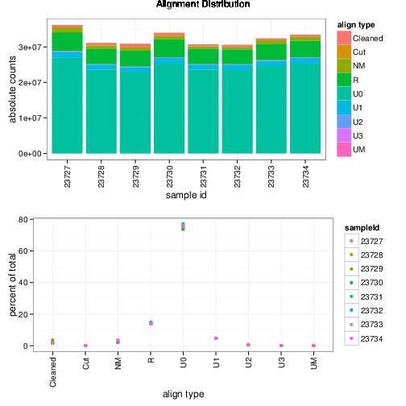
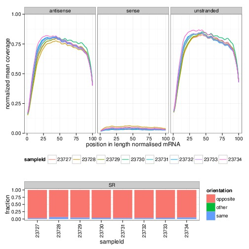
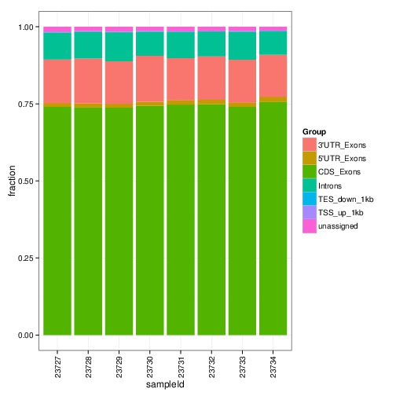

A single read 50 RNA-seq experiment (NEB, riboZero) was used to compare diffential expression with 3 strategies: HtSeq-count-gene (union, version 0.6.1p1), salmon-gene (version : 0.3.0) and kallisto-gene (kallisto 0.42.1). The reads were aligned to mm10 using star-aligner. Ensembl GRCh38 78 gtf was used as annotation. For salmon (non bias corrected) and kallisto the indices were generated from Homo_sapiens.GRCh38.cdna.all.fa.gz and Homo_sapiens.GRCh38.ncrna.fa.gz. The experiment consisted of 4 conditions with 2 replicates each. Gene counts were derived from kallisto with a home made script by summing estimated counts/transcripts per gene. Differential expression was called using DESeq2.
Only the comparison for one condition is shown. The other conditions had similar results regarding htseq/kallisto/salmon.
The bottom line is that the overlap between kallisto and HtSeq-count in calling differentially expressed genes is largest. Depending on the p-value treshold, there are about 10-20% called by only htseq or kallisto or salmon. About 2% are called by salmon and htseq or kallisto. The majority is called by all three methods and htseq and salmon together. The difference in choosing kallisto or htseq-count is about 15%. Because of the consistency of the differentially expressed genes with transcript estimations I will switch to kallisto for most future analyses.
Alignment statistics show a nice stranded undegraded preparation
  Scatter plots show high correlation between the different methods. Salmon and kallisto have the highest correlation for base mean, however, when comparing the p-values of differential expression, htseq-counts and kallisto are correlating better.
Testing for the intersections of differentially expressed called genes at different p-value tresholds, the overlap between kallisto and HtSeq-count is the largest. Depending on the p-value treshold, there are about 10-20% called by only htseq or kallisto or salmon. About 2% are called by salmon and htseq or kallisto. The majority is called by all three methods or htseq and salmon together. The difference between choosing kallisto or htseq-count is about 15%. Because of the consistency of the differentially expressed genes with transcript estimations I will switch to kallisto for most future analyses.